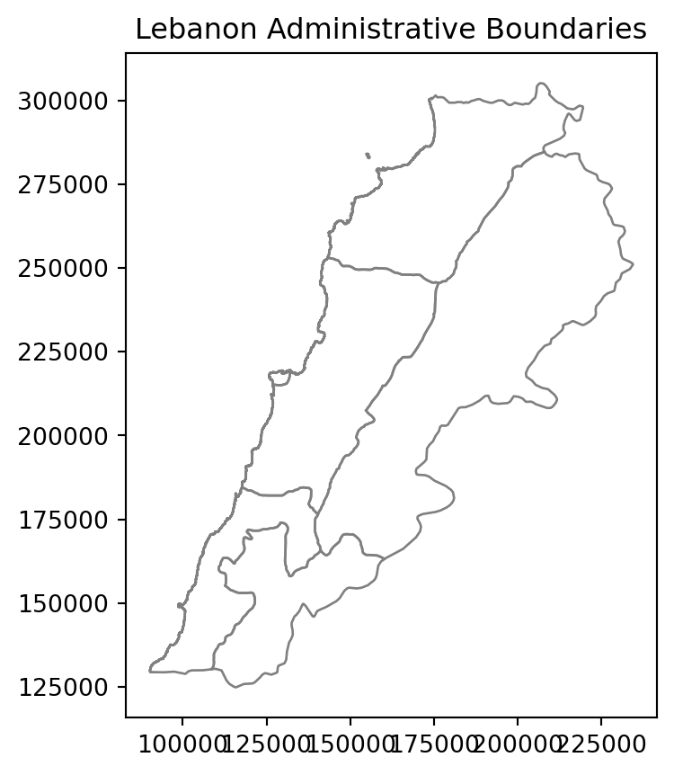
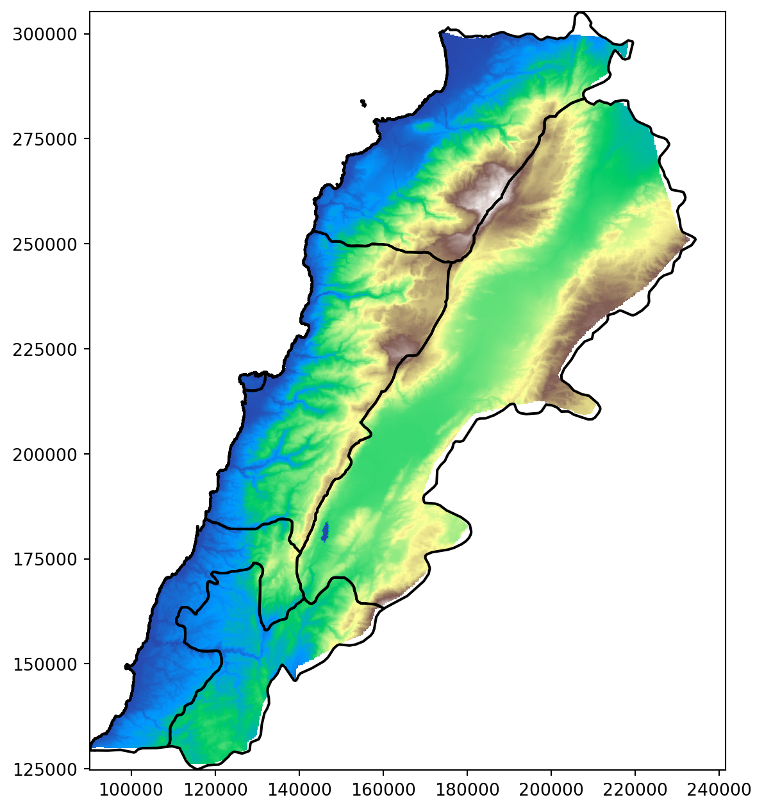

# Importing rasterio for handling raster data
import rasterio
from rasterio.warp import reproject, Resampling, calculate_default_transform
from rasterio.mask import mask
from rasterio.plot import show
from rasterio import features
# For converting Shapely geometries to GeoJSON format
from shapely.geometry import mapping
# For plotting and visualizing data using Matplotlib
import matplotlib.pyplot as plt
import matplotlib.patches as mpatches
from matplotlib.patches import Patch
import matplotlib.colorbar as colorbar
import matplotlib.colors as mcolors
from matplotlib.colors import ListedColormap, BoundaryNorm
# For working with geospatial data
import geopandas as gpd
# For numerical operations and handling arrays
import numpy as np
import pandas as pd
# These imports are for file and directory operations
import os
import zipfile
import shutil
#import rioxarray as rxr
from rasterstats import zonal_statsLab in Python
In this session, we will further explore the world of geographic data visualization by building upon our understanding of both raster data and choropleths. Raster data, consisting of gridded cells, allows us to represent continuous geographic phenomena such as temperature, elevation, or satellite imagery. Choropleths, on the other hand, are an effective way to visualize spatial patterns through the use of color-coded regions, making them invaluable for displaying discrete data like population density or election results. By combining these techniques, we will gain a comprehensive toolkit for conveying complex geographical information in a visually compelling manner.
Importing Modules
Terrain data
Import raster data
Raster terrain data consists of gridded elevation values that represent the topography of a geographic area. You can download this from the relevant github folder. A good place to download elevation data is Earth Explorer. This video takes you through the download process if you want to try this out yourself.
We first import a raster file for elevation.
# Load the raster data
elevation = rasterio.open("data/Lebanon/LBN_elevation_w_bathymetry.tif")Plot it.
plt.figure(figsize=(8, 8))
plt.imshow(elevation.read(1), cmap='viridis')
plt.colorbar(label='Elevation')
plt.title('Elevation with Bathymetry')
plt.show()
This information is typically accessed and updated via the .profile.
print(elevation.profile){'driver': 'GTiff', 'dtype': 'float64', 'nodata': nan, 'width': 1150, 'height': 708, 'count': 1, 'crs': CRS.from_epsg(4326), 'transform': Affine(0.002500000000000124, 0.0, 33.74907268219525,
0.0, -0.002500000000000124, 34.833268747734884), 'blockxsize': 256, 'blockysize': 256, 'tiled': True, 'compress': 'deflate', 'interleave': 'band'}Have a look at the CRS.
# Check the CRS of the raster
crs = elevation.crs
print(crs)EPSG:4326Import the Lebanon shapefile
Import the Lebanon shapefile, plot it, and verify its Coordinate Reference System (CRS). Is it the same as the raster’s CRS?
# Load the shapefile data
Lebanon_adm1 = gpd.read_file("data/Lebanon/LBN_adm1.shp")
# Plot the geometry
Lebanon_adm1.plot(edgecolor='grey', facecolor='none')
plt.title('Lebanon Administrative Boundaries')
plt.show()
# Check the CRS of the shapefile
crs = Lebanon_adm1.crs
print(crs)EPSG:22770Reproject the Raster
# Define the desired destination CRS
dst_crs = "EPSG:22770" # For example, WGS84
# Calculate the transform matrix, width, and height for the output raster
dst_transform, width, height = calculate_default_transform(
elevation.crs, # source CRS from the raster
dst_crs, # destination CRS
elevation.width, # column count
elevation.height, # row count
*elevation.bounds # outer boundaries (left, bottom, right, top)
)
# Print the source and destination transforms
print("Source Transform:\n", elevation.transform, '\n')
print("Destination Transform:\n", dst_transform)
# Define the metadata for the output raster
dst_meta = elevation.meta.copy()
dst_meta.update({
'crs': dst_crs,
'transform': dst_transform,
'width': width,
'height': height
})
# Reproject and write the output raster
with rasterio.open("data/Lebanon/reprojected_elevation.tif", "w", **dst_meta) as dst:
for i in range(1, elevation.count + 1):
reproject(
source=rasterio.band(elevation, i),
destination=rasterio.band(dst, i),
src_transform=elevation.transform,
src_crs=elevation.crs,
dst_transform=dst_transform,
dst_crs=dst_crs,
resampling=Resampling.nearest
)Source Transform:
| 0.00, 0.00, 33.75|
| 0.00,-0.00, 34.83|
| 0.00, 0.00, 1.00|
Destination Transform:
| 244.59, 0.00,-36330.85|
| 0.00,-244.59, 326252.80|
| 0.00, 0.00, 1.00|Cropping and Masking
Cropping:
Purpose: Cropping a raster involves changing the extent of the raster dataset by specifying a new bounding box or geographic area of interest. The result is a new raster that covers only the specified region.
Typical Use: Cropping is commonly used when you want to reduce the size of a raster dataset to focus on a smaller geographic area of interest while retaining all the original data values within that area.
Masking:
Purpose: Applying a binary mask to the dataset. The mask is typically a separate raster or polygon layer where certain areas are designated as “masked” (1) or “unmasked” (0).
Typical Use: Masking is used when you want to extract or isolate specific areas or features within a raster dataset. For example, you might use a mask to extract land cover information within the boundaries of a protected national park.
In many cases, these cropping and masking are executed one after the other because it is computationally easier to crop when dealing with large datasets, and then masking.
elevation_22770 = rasterio.open("data/Lebanon/reprojected_elevation.tif")
# Use unary_union method to combine the geometries
lebanon_union = Lebanon_adm1.geometry.unary_union
# Crop the elevation data to the extent of Lebanon
elevation_lebanon, elevation_lebanon_transform = mask(elevation_22770, [mapping(lebanon_union)], crop=True)Plot elevation
# Assuming elevation_lebanon contains the cropped elevation data and Lebanon_adm1 is the GeoDataFrame
fig, ax = plt.subplots(figsize=(8, 8))
# Plot the elevation data
show(elevation_lebanon, transform=elevation_lebanon_transform, ax=ax, cmap='terrain')
# Plot the Lebanon boundaries on top, with no fill color
Lebanon_adm1.boundary.plot(ax=ax, edgecolor='black')
plt.show()
Let’s improve this a bit. Remember that there is a lot we can do with Cmap.
# Define the reversed 6 shades of orange
orange_shades_reversed = ['#ef3b2c', '#fb6a4a', '#fc9272', '#fcbba1', '#fee0d2', '#fff5eb']
# Define the breaks
boundaries = [-100, 0, 700, 1200, 1800, 3300]
# Define the color map and normalization
cmap = ListedColormap(orange_shades_reversed)
norm = BoundaryNorm(boundaries=boundaries, ncolors=len(orange_shades_reversed))
fig, ax = plt.subplots(figsize=(8, 8))
# Plot the elevation data with the custom color map
im = show(elevation_lebanon, transform=elevation_lebanon_transform, ax=ax, cmap=cmap, norm=norm)
# Plot the Lebanon boundaries on top, with no fill color
Lebanon_adm1.boundary.plot(ax=ax, edgecolor='black')
# Remove the axes
ax.axis('off')
# Manually create a legend
legend_labels = ['< 0 m', '0 - 700 m', '700 - 1200 m', '1200 - 1800 m', '1800 - 3300 m', '> 3300 m']
legend_patches = [Patch(color=orange_shades_reversed[i], label=legend_labels[i]) for i in range(len(orange_shades_reversed))]
# Add the legend to the right of the plot
ax.legend(handles=legend_patches, loc='center left', bbox_to_anchor=(1, 0.5), title='Elevation (m)', frameon=False)
plt.show()Questions to ask yourself about how you can improve these maps, going back to geo-visualisation and choropleths.
What are the logical breaks for elevation data?
Should the colours be changed to standard elevation pallettes?
Spatial join with vector data
You might want to extract values from a raster data set, and then map them within a vector framework or extract them to analyse them statistically. If it therefore very useful to know how to extract:
# Load some geo-localized survey data
households = gpd.read_file("data/Lebanon/random_survey_LBN.shp")
# Open the elevation raster file
with rasterio.open("data/Lebanon/LBN_elevation_w_bathymetry.tif") as src:
# Reproject households coordinates to the CRS of the raster
households = households.to_crs(src.crs)
# Extract elevation values at the coordinates of the points
housesales_elevation = [
val[0] if val is not None else None
for val in src.sample([(geom.x, geom.y) for geom in households.geometry])
]
# Attach elevation at each point to the original households GeoDataFrame
households['elevation'] = housesales_elevation
# Check out the data
print(households.head()) id geometry elevation
0 0 POINT (35.90386 33.72841) 876.0
1 1 POINT (36.17128 34.20268) 1546.0
2 2 POINT (35.81425 34.19914) 1108.0
3 3 POINT (36.03916 34.06442) 1234.0
4 4 POINT (35.69817 34.04050) 999.0- Handling CRS (Coordinate Reference System): The household data CRS is transformed to match the raster’s CRS before extracting elevation values.
- Extracting Elevation: Elevation values are extracted at each household location using rasterio’s sample method.
- Attaching Elevation Data: The elevation data is added as a new column to the households
GeoDataFrame.
Important
Make sure all your data is in the same CRS, otherwise the rasterio’s sample will not work properly.
Night Lights
This section is a bit more advanced, there are hints along the way to make it simpler.
Download data
Download the Data
We need to download some raster data. NOAA has made nighttime lights data available for 1992 to 2013. It is called the Version 4 DMSP-OLS Nighttime Lights Time Series. The files are cloud-free composites made using all the available archived DMSP-OLS smooth resolution data for calendar years. In cases where two satellites were collecting data - two composites were produced. The products are 30 arc-second grids, spanning -180 to 180 degrees longitude and -65 to 75 degrees latitude. We can download the Average, Visible, Stable Lights, & Cloud Free Coverages for 1992 and 2013 and put them in the data/Kenya_Tanzania folder.
Important
You can also download the data here. You will need to be logged into your UoL account.
The downloaded files are going to be in a “TAR” format. A TAR file is an archive created by tar, a Unix-based utility used to package files together for backup or distribution purposes. It contains multiple files stored in an uncompressed format along with metadata about the archive. Tars files are also used to reduce files’ size. TAR archives compressed with GNU Zip compression may become GZ, .TAR.GZ, or .TGZ files. We need to decompress them before using them.
Before you move forward download the data for 1992 and 2013. It is also good practice to create a scratch folder where you do all your unzipping.
# Load the raster files
raster1_path = 'data/Kenya_Tanzania/F101992.v4b_web.stable_lights.avg_vis.tif'
raster2_path = 'data/Kenya_Tanzania/F182013.v4c_web.stable_lights.avg_vis.tif'
# Open the raster files
with rasterio.open(raster1_path) as src1:
raster1 = src1.read(1) # Read the first (and only) band
with rasterio.open(raster2_path) as src2:
raster2 = src2.read(1) # Read the first (and only) band
# Stack the rasters along a new axis (depth axis)
stacked_rasters = np.stack([raster1, raster2], axis=0)# Create a plot
fig, (ax1, ax2) = plt.subplots(1, 2, figsize=(8, 8))
# Plot the first raster
ax1.imshow(stacked_rasters[0], cmap='cividis')
ax1.set_title('1992')
ax1.axis('off')
# Plot the second raster
ax2.imshow(stacked_rasters[1], cmap='cividis')
ax2.set_title('2013')
ax2.axis('off')
# Show the plot
plt.tight_layout()
plt.show()
Why can’t you see much? Discuss with the person next to you.
Country shapefiles
The second step is to download the shapefiles for Kenya and Tanzania. GADM has made available national and subnational shapefiles for the world. The zips you download, such as gadm36_KEN_shp.zip from GADM should be placed in the Kenya_Tanzania folder. This is the link gadm.
# Set the data folder path
datafolder = 'data'
# List the country shapefiles downloaded from the GADM website
files = [os.path.join(root, file)
for root, dirs, files in os.walk(os.path.join(datafolder, "Kenya_Tanzania"))
for file in files if file.endswith("_shp.zip")]
print(files)
# Create a scratch folder
scratch_folder = os.path.join(datafolder, "Kenya_Tanzania", "scratch")
os.makedirs(scratch_folder, exist_ok=True)
# Unzip the files
for file in files:
with zipfile.ZipFile(file, 'r') as zip_ref:
zip_ref.extractall(scratch_folder)
# List GADM shapefiles
gadm_files = [os.path.join(root, file)
for root, dirs, files in os.walk(os.path.join(datafolder, "Kenya_Tanzania"))
for file in files if file.startswith("gadm")]
print(gadm_files)
# Select regional level 2 files
gadm_files_level2 = [file for file in gadm_files if "2.shp" in file]
print(gadm_files_level2)
# Load the shapefiles
shps = [gpd.read_file(shp) for shp in gadm_files_level2]
print(shps)
# Delete the scratch folder with the data we don't need
#shutil.rmtree(scratch_folder)['data/Kenya_Tanzania/gadm36_TZA_shp.zip', 'data/Kenya_Tanzania/gadm36_KEN_shp.zip']['data/Kenya_Tanzania/gadm36_TZA_shp.zip', 'data/Kenya_Tanzania/gadm36_KEN_shp.zip', 'data/Kenya_Tanzania/scratch/gadm36_KEN_2.dbf', 'data/Kenya_Tanzania/scratch/gadm36_KEN_3.dbf', 'data/Kenya_Tanzania/scratch/gadm36_KEN_1.dbf', 'data/Kenya_Tanzania/scratch/gadm36_KEN_0.dbf', 'data/Kenya_Tanzania/scratch/gadm36_TZA_0.dbf', 'data/Kenya_Tanzania/scratch/gadm36_TZA_1.dbf', 'data/Kenya_Tanzania/scratch/gadm36_TZA_3.dbf', 'data/Kenya_Tanzania/scratch/gadm36_TZA_2.dbf', 'data/Kenya_Tanzania/scratch/gadm36_TZA_2.shp', 'data/Kenya_Tanzania/scratch/gadm36_TZA_1.shx', 'data/Kenya_Tanzania/scratch/gadm36_TZA_2.cpg', 'data/Kenya_Tanzania/scratch/gadm36_TZA_3.cpg', 'data/Kenya_Tanzania/scratch/gadm36_TZA_0.shx', 'data/Kenya_Tanzania/scratch/gadm36_TZA_3.shp', 'data/Kenya_Tanzania/scratch/gadm36_TZA_1.shp', 'data/Kenya_Tanzania/scratch/gadm36_TZA_2.shx', 'data/Kenya_Tanzania/scratch/gadm36_TZA_1.cpg', 'data/Kenya_Tanzania/scratch/gadm36_TZA_0.cpg', 'data/Kenya_Tanzania/scratch/gadm36_TZA_3.shx', 'data/Kenya_Tanzania/scratch/gadm36_TZA_0.shp', 'data/Kenya_Tanzania/scratch/gadm36_KEN_0.cpg', 'data/Kenya_Tanzania/scratch/gadm36_KEN_3.shx', 'data/Kenya_Tanzania/scratch/gadm36_KEN_0.shp', 'data/Kenya_Tanzania/scratch/gadm36_KEN_1.shp', 'data/Kenya_Tanzania/scratch/gadm36_KEN_2.shx', 'data/Kenya_Tanzania/scratch/gadm36_KEN_1.cpg', 'data/Kenya_Tanzania/scratch/gadm36_KEN_3.cpg', 'data/Kenya_Tanzania/scratch/gadm36_KEN_0.shx', 'data/Kenya_Tanzania/scratch/gadm36_KEN_3.shp', 'data/Kenya_Tanzania/scratch/gadm36_KEN_2.shp', 'data/Kenya_Tanzania/scratch/gadm36_KEN_1.shx', 'data/Kenya_Tanzania/scratch/gadm36_KEN_2.cpg', 'data/Kenya_Tanzania/scratch/gadm36_TZA_2.prj', 'data/Kenya_Tanzania/scratch/gadm36_TZA_3.prj', 'data/Kenya_Tanzania/scratch/gadm36_TZA_1.prj', 'data/Kenya_Tanzania/scratch/gadm36_TZA_0.prj', 'data/Kenya_Tanzania/scratch/gadm36_KEN_0.prj', 'data/Kenya_Tanzania/scratch/gadm36_KEN_1.prj', 'data/Kenya_Tanzania/scratch/gadm36_KEN_3.prj', 'data/Kenya_Tanzania/scratch/gadm36_KEN_2.prj']
['data/Kenya_Tanzania/scratch/gadm36_TZA_2.shp', 'data/Kenya_Tanzania/scratch/gadm36_KEN_2.shp'][ GID_0 NAME_0 GID_1 NAME_1 NL_NAME_1 \
0 TZA Tanzania TZA.1_1 Arusha NaN
1 TZA Tanzania TZA.1_1 Arusha NaN
2 TZA Tanzania TZA.1_1 Arusha NaN
3 TZA Tanzania TZA.1_1 Arusha NaN
4 TZA Tanzania TZA.1_1 Arusha NaN
.. ... ... ... ... ...
178 TZA Tanzania TZA.28_1 Zanzibar North NaN
179 TZA Tanzania TZA.29_1 Zanzibar South and Central NaN
180 TZA Tanzania TZA.29_1 Zanzibar South and Central NaN
181 TZA Tanzania TZA.30_1 Zanzibar West NaN
182 TZA Tanzania TZA.30_1 Zanzibar West NaN
GID_2 NAME_2 \
0 TZA.1.2_1 Arusha
1 TZA.1.1_1 Arusha Urban
2 TZA.1.3_1 Karatu
3 TZA.1.4_1 Lake Eyasi
4 TZA.1.5_1 Lake Manyara
.. ... ...
178 TZA.28.2_1 Kaskazini 'B'
179 TZA.29.1_1 Kati
180 TZA.29.2_1 Kusini
181 TZA.30.1_1 Magharibi
182 TZA.30.2_1 Mjini
VARNAME_2 NL_NAME_2 TYPE_2 \
0 NaN NaN Wilaya
1 NaN NaN Wilaya
2 NaN NaN Wilaya
3 NaN NaN Water body
4 NaN NaN Water body
.. ... ... ...
178 Kaskazini B|North B|Zansibar North|Zanzibar No... NaN Wilaya
179 Zanzibar Central NaN Wilaya
180 Zanzibar South NaN Wilaya
181 Zanzibar West NaN Wilaya
182 Zanzibar Town NaN Wilaya
ENGTYPE_2 CC_2 HASC_2 \
0 District 06 TZ.AS.AS
1 District 03 NaN
2 District 04 TZ.AS.KA
3 Water body NaN NaN
4 Water body NaN NaN
.. ... ... ...
178 District 02 TZ.ZN.NB
179 District 01 TZ.ZS.CE
180 District 02 TZ.ZS.SO
181 District 01 TZ.ZW.WE
182 District 02 TZ.ZW.TO
geometry
0 MULTIPOLYGON (((36.86976 -3.52607, 36.86972 -3...
1 POLYGON ((36.75153 -3.37381, 36.75180 -3.37386...
2 POLYGON ((34.79647 -3.79258, 34.79669 -3.79408...
3 POLYGON ((34.89178 -3.62421, 34.89257 -3.62398...
4 POLYGON ((35.77901 -3.56244, 35.77862 -3.56134...
.. ...
178 MULTIPOLYGON (((39.20542 -5.91153, 39.20542 -5...
179 MULTIPOLYGON (((39.50847 -6.17962, 39.50847 -6...
180 POLYGON ((39.57180 -6.41676, 39.57180 -6.41680...
181 MULTIPOLYGON (((39.33430 -6.41708, 39.33430 -6...
182 POLYGON ((39.22165 -6.18391, 39.22163 -6.18395...
[183 rows x 14 columns], GID_0 NAME_0 GID_1 NAME_1 NL_NAME_1 GID_2 \
0 KEN Kenya KEN.1_1 Baringo NaN KEN.1.1_1
1 KEN Kenya KEN.1_1 Baringo NaN KEN.1.2_1
2 KEN Kenya KEN.1_1 Baringo NaN KEN.1.3_1
3 KEN Kenya KEN.1_1 Baringo NaN KEN.1.4_1
4 KEN Kenya KEN.1_1 Baringo NaN KEN.1.5_1
.. ... ... ... ... ... ...
296 KEN Kenya KEN.47_1 West Pokot NaN KEN.47.2_1
297 KEN Kenya KEN.47_1 West Pokot NaN KEN.47.3_1
298 KEN Kenya KEN.47_1 West Pokot NaN KEN.47.4_1
299 KEN Kenya KEN.47_1 West Pokot NaN KEN.47.5_1
300 KEN Kenya KEN.47_1 West Pokot NaN KEN.47.6_1
NAME_2 VARNAME_2 NL_NAME_2 TYPE_2 ENGTYPE_2 CC_2 \
0 805 NaN NaN Constituency Constituency 162
1 Baringo Central NaN NaN Constituency Constituency 159
2 Baringo North NaN NaN Constituency Constituency 158
3 Baringo South NaN NaN Constituency Constituency 160
4 Eldama Ravine NaN NaN Constituency Constituency 162
.. ... ... ... ... ... ...
296 Kapenguria NaN NaN Constituency Constituency 129
297 Pokot South NaN NaN Constituency Constituency 132
298 Sigor NaN NaN Constituency Constituency 130
299 unknown 3 NaN NaN Constituency Constituency 0
300 unknown 8 NaN NaN Constituency Constituency 0
HASC_2 geometry
0 NaN POLYGON ((35.87727 -0.02973, 35.87699 -0.02947...
1 NaN POLYGON ((35.80651 0.31642, 35.80780 0.31627, ...
2 NaN POLYGON ((35.81394 0.60442, 35.81377 0.60363, ...
3 NaN POLYGON ((36.25757 0.38328, 36.25766 0.38242, ...
4 NaN POLYGON ((35.84734 -0.07654, 35.84637 -0.07804...
.. ... ...
296 NaN MULTIPOLYGON (((35.35352 1.65473, 35.35364 1.6...
297 NaN POLYGON ((35.47385 1.00621, 35.47345 1.00622, ...
298 NaN POLYGON ((35.59382 1.28579, 35.59303 1.28596, ...
299 NaN POLYGON ((35.15631 1.49415, 35.15616 1.49424, ...
300 NaN POLYGON ((35.06057 1.50514, 35.06191 1.50485, ...
[301 rows x 14 columns]]Merge Shapefiles
Even though it is not necessary here, we can merge the shapefile to visualize all the regions at once.
When doing zonal statistics, it is faster and easier to process one country at a time and then combine the resulting tables. If you have access to a computer with multiple cores, it is also possible to do “parallel processing” to process each chunk at the same time in parallel.
# Merge all shapefiles into one GeoDataFrame
merged_countries = gpd.GeoDataFrame(pd.concat(shps, ignore_index=True))
# Optionally, reset index if needed
merged_countries = merged_countries.reset_index(drop=True)We can then plot Kenya and Tanzania at Regional Level 2:
# Plot all shapefiles
fig, ax = plt.subplots(figsize=(10, 10))
merged_countries.plot(ax=ax, edgecolor='k', facecolor='none', linewidth=1) # No fill color
#for gdf in shps:
# gdf.plot(ax=ax, edgecolor='k', facecolor='none', alpha=0.5) # Adjust alpha and edgecolor as needed
# Set plot title and labels
ax.set_title('Regional Level 2 Shapefiles')
ax.set_xlabel('Longitude')
ax.set_ylabel('Latitude')
# Show plot
plt.show()
Zonal statistics
We use the module rasterstats to calculate the sum and average nighttime for each region. The nighttime lights rasters are quite large, but as we do not need to do any operations on them (e.g. calculations using the overlay function, cropping or masking to the shapefiles extent), the process should be relatively fast.
# Calculate zonal statistics for the first raster (1992)
stats_1992 = zonal_stats(merged_countries, raster1_path, stats=['sum', 'mean'], nodata=-9999, geojson_out=True)
# Calculate zonal statistics for the second raster (2013)
stats_2013 = zonal_stats(merged_countries, raster2_path, stats=['sum', 'mean'], nodata=-9999, geojson_out=True)
# Convert the zonal stats results to GeoDataFrames, retaining geometry and attributes
stats_1992_gdf = gpd.GeoDataFrame.from_features(stats_1992)
stats_2013_gdf = gpd.GeoDataFrame.from_features(stats_2013)
# Optionally, add a year column to distinguish between them
stats_1992_gdf['year'] = 1992
stats_1992_gdf['year'] = 2013
# Combine the results into a single DataFrame
combined_stats_gdf = pd.concat([stats_1992_gdf, stats_2013_gdf], ignore_index=True)
# Display the results
print(combined_stats_gdf.head()) geometry GID_0 NAME_0 GID_1 \
0 MULTIPOLYGON (((36.86976 -3.52607, 36.86972 -3... TZA Tanzania TZA.1_1
1 POLYGON ((36.75153 -3.37381, 36.75180 -3.37386... TZA Tanzania TZA.1_1
2 POLYGON ((34.79647 -3.79258, 34.79669 -3.79408... TZA Tanzania TZA.1_1
3 POLYGON ((34.89178 -3.62421, 34.89257 -3.62398... TZA Tanzania TZA.1_1
4 POLYGON ((35.77901 -3.56244, 35.77862 -3.56134... TZA Tanzania TZA.1_1
NAME_1 NL_NAME_1 GID_2 NAME_2 VARNAME_2 NL_NAME_2 TYPE_2 \
0 Arusha None TZA.1.2_1 Arusha None None Wilaya
1 Arusha None TZA.1.1_1 Arusha Urban None None Wilaya
2 Arusha None TZA.1.3_1 Karatu None None Wilaya
3 Arusha None TZA.1.4_1 Lake Eyasi None None Water body
4 Arusha None TZA.1.5_1 Lake Manyara None None Water body
ENGTYPE_2 CC_2 HASC_2 mean sum year
0 District 06 TZ.AS.AS 0.616771 890.0 2013.0
1 District 03 None 2.260450 703.0 2013.0
2 District 04 TZ.AS.KA 0.000000 0.0 2013.0
3 Water body None None 0.000000 0.0 2013.0
4 Water body None None 0.000000 0.0 2013.0 More on zonal stats in python here.
Visualize
Let’s have a first look at our result.
# Create a figure with two subplots side by side
fig, (ax1, ax2) = plt.subplots(1, 2, figsize=(8, 6))
# Plot for 1992 with inverted colormap
stats_1992_gdf.plot(column='mean', cmap='YlGnBu_r', legend=True, ax=ax1)
ax1.set_title("Mean 1992")
ax1.axis('off')
# Plot for 2013 with inverted colormap
stats_2013_gdf.plot(column='mean', cmap='YlGnBu_r', legend=True, ax=ax2)
ax2.set_title("Mean 2013")
ax2.axis('off')
# Adjust layout
plt.tight_layout()
# Show the plots
plt.show()
Most of the Kenya and Tanzania have really low values. To make the maps tell a story, we can use fixed breaks.
# Define breaks and labels
breaks = [0, 0.05, 0.1, 2, 63]
labels = ['0-0.05', '0.05-0.1', '0.1-2', '2-63']
# Create a custom colormap and normalization
cmap = plt.get_cmap('YlGnBu_r')
norm = mcolors.BoundaryNorm(breaks, cmap.N)
# Create a figure with two subplots side by side
fig, (ax1, ax2) = plt.subplots(1, 2, figsize=(8, 6))
# Plot for 1992 with custom colormap and breaks
stats_1992_gdf.plot(column='mean', cmap=cmap, norm=norm, legend=False, ax=ax1)
ax1.set_title("Mean 1992")
ax1.axis('off')
# Plot for 2013 with custom colormap and breaks
stats_2013_gdf.plot(column='mean', cmap=cmap, norm=norm, legend=False, ax=ax2)
ax2.set_title("Mean 2013")
ax2.axis('off')
# Add a colorbar to the figure
cbar = fig.colorbar(plt.cm.ScalarMappable(norm=norm, cmap=cmap), ax=[ax1, ax2], orientation='horizontal', fraction=0.05, pad=0.18, aspect=12)
# Set ticks and labels to match the breaks
#cbar.set_ticks(breaks)
#cbar.set_ticklabels(labels)
# Adjust layout
plt.tight_layout()
# Show the plots
plt.show()/var/folders/_n/krcxvsq92k7bdd1nfpk3_9c00000gn/T/ipykernel_94456/423459503.py:30: UserWarning:
This figure includes Axes that are not compatible with tight_layout, so results might be incorrect.

Have a think about what the data is telling you. What’s the story?
We can also make it interactive with folium and folium.plugins DualMap but this is a bit more complicated in python and will be covered in Web Mapping and Visualiation.